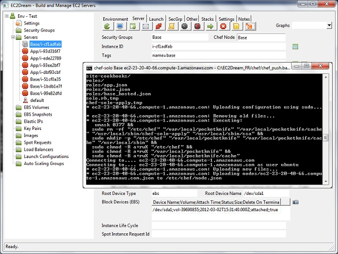
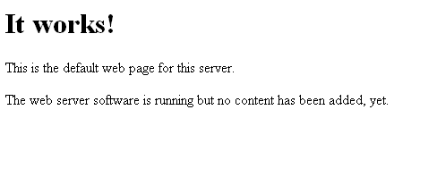
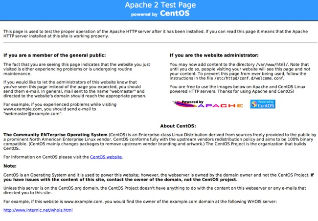

Build an Application
Core Concepts
Fixed IP
Fixed IP addresses, called in Amazon Elastic IP addresses, are designed for dynamic cloud computing. Fixed IP addresses are associated with your account, not specific instances. Any fixed IP addresses that you associate with your account remain associated with your account until you explicitly release them.Unlike traditional static IP addresses, however, fixed IP addresses in Cloud Computing allow you to mask instance or availability zone failures by rapidly remapping your public IP addresses to any instance in your account. You can only associate one fixed IP address with one instance at a time.
Optionally Create a separate Volume
To create a new Volume, called in Amazon Elastic Block Storage (EBS), perform the following steps:1. Click on the "Volumes" in the tree view.
2. Create a Volume by clicking on the new icon

-Give the volume a nickname i.e. App.
-Type in the size in gigabytes (GB) of the volume you would like between 1 and 1000. I would recommend 10GB.
-Specify the availability zone and "no snapshot".
NOTE: A volume must be in the same availability zone as an instance. You can optionally specify an Availability Zone if desired or the snapshot id to create a volume from.
3. Click the "Create" button, and your volume will be created.
NOTE: If you accidentally create a volume in the wrong zone, you can either create a new blank volume in the proper zone, or create a new volume based on a snapshot of a volume in another zone.
4. If a server instance is already running it can be attached dynamically to the instance by pressing the attach button
5. It can also be attached, mounted and initialised by the cloud_init.rb script at startup by specifying parameters in the userdata
Optionally creating a new Fixed IP
Some applications like (for example Magento) have the IP Address or URL is configured in the application so need a fixed IP Address.Also for production a Fixed IP is typically configured for outwardly facing parts.
1. Click on "IP Addresses" in the tree view and then click on the new icon

2. If you do have an instance running associate the IP with an instance by click on the link icon
Create Security Group and launch the server
1. Create a Security Group for the server called App.
Rackspace
Skip creating a security as Rackspace currently does not support security groups. use tyhe default group in EC2Dream.2. Create a launch profile for App with an Image id for the Base Image created earlier.

Specify in the User Data the cookbook to run at startup:
#!/bin/bash
#Chef run list
cat << "EOF" > /etc/chef/node.json
{
"run_list": ["recipe[apache2]"]
}
EOF
sudo chef-solo -c /etc/chef/solo.rb -j /etc/chef/node.json -l debug > /home/ubuntu/startup.log && echo "Server ready." | wall
If you are using an elastic ip add to the recipeadd to the attributes in the cookbook:
default[:base][:ip_address] = "999.999.999.999"
If you are using a separate volume specify in the user data:add to the attributes in the cookbook:
default[:base][:volume] = vol-xxxxxx"
default[:base][:device] = "/dev/sdf"
3. If you are using a Windows Server download the iis cookbook from http://community.opscode.com/cookbooks/iis and unzip into the chef repository cookbook folder.
Configure the attributes and use iis instead of App in the following steps.4. Launch the server and in the Server panel for the running App server press on the Chef button

5. The App cookbook installs and runs apache so to test go into a browser and run http://ec2-99-99-999-999.compute-1.amazonaws.com using the Public DSN from the server panel
For ubuntu servers you will see an initial server like:

and for Centos:

6. For Production either:
a. Deploy the Application cookbooks to Hosted Chef so servers can run the base image and install the application at startup by specifying in the user data: (see Using Hosted Chef for more details)
#!/bin/bash
#Chef run list
cat << "EOF" > /etc/chef/node.json
{
"run_list": ["role[apache2]"]
}
EOF
sudo chef-client -c /etc/chef/config.rb -j /etc/chef/node.json -l debug > /home/ubuntu/startup.log && echo "Server ready." | wall
b. Create an image from the Application built by the application cookbook and run that image in production.c. Deploy the image to a source control system like Github and have the servers load the application cookbook at startup and install.
7. For some popular applications follow the following instructions to install from their cookbooks :
For Alfresco see Install Alfresco
For Magento see Install Magento
For OpenBravo see Install OpenBravo. Currently no cookbook so install from script at https://github.com/neillturner/ec2dream/tree/master/scripts/applications)
For SugarCRM see Install SugarCRM
6. To automate the start and stop of the application add the relevant application command to the /etc/rc.local and /etc/rc6.d files.